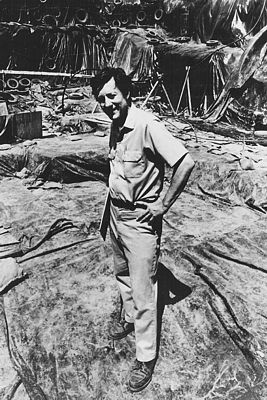
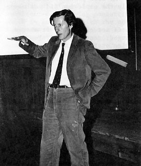
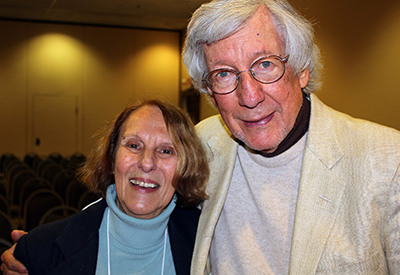

Stuart Struever
By Isaac Constans
Introduction
Stuart Struever is a pioneer for modern and Midwest United States archaeology. Growing up in Illinois, Struever stayed in the region for school and work, dedicating much of his career to refuting notions of the inferiority of native peoples. He went on to a long career in anthropology, teaching and working at Northwestern after completing his graduate degree at the University of Chicago. En route to a plethora of discoveries in the fields of the new archaeology, Woodland Period Archaeology, and public archaeology, Struever was acknowledged by several prominent organizations for his contributions to the field of archaeology.
Early Life
Born in Peru, Illinois on August 4, 1931, Struever was a member of a wealthy family high up in the American Nickeloid Company (“Stuart Struever Explained). At a young age, Stuart Struever was instantly enraptured by archaeology, a zeal described in a 1975 article as his “youthful enthusiasm.” Set off by the finding of a projectile point in a neighbor’s yard at the age of nine, Struever was imbued with imaginations of the use of such objects. He kept expanding his radius of search with age, stashing the findings from digs found in nearby creeks and farms (Carr and Case 2). His excitement never slowed.
Upon the receipt of his driver’s license, Struever took his hobby to a new extent, plotting the sites where he found artifacts on the United States Geological Service databases, while curating a mini-museum on his grandparent’s porch (Carr and Case 2). In college, he got straight to work, meeting Elmer Harp at Dartmouth and furthering his archaeological career. Back home and throughout the United States, he attended professional excavations with vocational archaeologists, spindling himself a network of future references (Carr and Case 3).
Career
Struever graduated Dartmouth in 1953 with a degree in English and made an instant jump to Harvard archaeological school, but the stay was abruptly cut short (“Stuart Struever Explained”). Drafted to the army for the Korean War, Struever had his plans thrown into a muddle. Returning home after two years of service, Struever found that the direction that he was headed in before the world was less clear. After a spontaneous excavation of the Kuhne site, an ancient Middle Woodland area in Northern Illinois, required the persuasion of high school students to assist him, Struever voyaged as a public speaker to educate the public and find support for future digs (Carr and Chase 3).
Slowly, that became a job. Struever circuited a 6-state region in the Midwest as a public speaker, receiving donations from wealthy investors who supported his mission. At age 21, he established a not-for-profit organization to centralize all of his motley tasks (“Center for American Archeology | Mission & History”). The organization soared in popularity as Struever’s career did likewise; the Archaeological Research Inc. was founded to originally aggregate his funding for his assortment of projects in Illinois but eventually grew to a nation-wide archaeological advocacy group (Farnsworth 1).
At this point in his still-germinal archaeological career, Struever was untrained in several crucial archaeological functions, such as analysis. Therefore, he decided to matriculate in anthropology graduate school at Northwestern University in 1958, initially with a specialization on African archaeology. Yet, when Struever discovered the Kamp Mound 9 prepared to be bulldozed, his education culminated at the pinnacle of his career to that point (Carr and Chase 3).
The site, named for landowner Pete Kamp, was rescued from destruction by Struever, who convinced Kamp to allow him to professionally excavate the site. Struever dedicated months to the project, delving further into Illinois’ Hopewellian culture than any archaeologist had before. He recruited local volunteers, professors, and graduate students to assist him in the excavation (Carr and Chase 4). The site yielded bountiful results and rewards to Struever, whose career was forever changed. In the process, Struever also found a project on which he could base his master’s project. After completing the dig, Struever had not only transferred to the University of Chicago doctoral program for anthropology, but laid down the foundations for himself to branch out within the archaeological community, fostering ties with Robert Braidwood, Creighton Gabel, and Joseph Caldwell (Carr and Chase 5). At the University of Chicago, Struever would become the apprentice of famed American archaeologist Lewis Binford, learning the integrative techniques of the New Archaeology (“Stuart Struever Explained”).
Between his involvement in propagating a new archaeological theory (The New Archaeology), his association with Binford and other famous archaeologists, and his presentations at national conferences, Struever had made a name for himself (“Stuart Struever Explained”). For a kid who had briefly considered medicine school, he was now fully immersed in archaeological fervor and the results showed (Witt). Struever was invited first to present his findings at A.R. Kelly’s national convention for the American Anthropological Association in Philadelphia in 1961 because of his coining of the “Interaction Sphere.” In 1964, he published his first article, The Hopewell Interaction Sphere in Riverine—Western Great Lakes Culture History, about his findings (Carr and Chase 4).
The excavation of Kamp Mound 9 also cemented Stuart as an esteemed Hopewellian archaeologist. An American Antiquity article written by Struever in 1965 comparing Illinoisan and Ohioan Hopewell cultures and societal contrasts extended the impacts of the Kamp Mound 9 dig further than Struever could have ever imagined (Carr and Chase 3). A fortuitous find while driving through the countryside had turned Struever’s childhood dream into a promising career. Struever went on studying the Hopewellian culture, eventually identifying the Havana Hopewell as his next project. Struever collaborated on the project with Gregory Perino, who dedicated over 20 years of study in the Midwest to the lower Illinois valley Hopewell. From 1962-1968, Struever intensively studied the Havana Hopewellian’s social stratification, agricultural organization, and economic structure, and his findings became the prevailing philosophies on such subjects.
Struever expanded his research, becoming ever more inclusive and interdisciplinary as he accrued followers. He continued to research the Middle Woodland people of the Midwest, settling on Apple Creek as a hotbed for activity. There, Struever discovered plant remains from the ancient Hopewellian cultures through an innovative technique. Using water and chemicals, Struever and his first wife, Alice, essentially developed a method for organic material retrieval through flotation (Carr and Chase 6). It was an effective method for segregating desired types of remains from look-alike imposters based on density and known properties. The practice is still employed today.
Seeds of a School
Enchanted by the lower Illinois valley and Hopewellian region, Struever demarcated a 70 x 40-mile plot of land suitable for research. On that land, he opened the “Illinois Valley Archaeological Program,” designed to assist students and workers in the ecological foundations of the study. Therefore, the area was mapped via multiple approaches, including botanically and geomorphologically. The records were maintained and revised to reflect any alteration in the land (Carr and Chase 6).
Despite his vast accomplishments, Struever, like even the most famous archaeologists, had to overcome financial challenges and handcuffs for each project. Such was the theme of lunchtime talks between Struever and Braidwood at the University of Chicago. Funds seemed perpetually insufficient by nature, as new technologies, while advancing the field, costed more. Thus, while archaeology as a science was making great strides during the 1960’s, progress was handicapped by the inaccessibility to new, pricey technologies. Struever was so passionate about the cause that he officially proposed that institutional branches needed to establish long-term fiscal allowances for archaeological exploration. His work garnered an invitation from Kent Flannery to speak at the Anthropological Society of Washington meeting about how to broaden funding (Carr and Chase 6).
Binford departed his position in the University of Chicago archaeological department in 1964. Still finalizing his dissertation, Struever accepted a lecturer position in his mentor’s stead and went straight to work on formulating ideas (Carr and Chase 6). Struever approached Braidwood about the possibility of creating a new University of Chicago archaeological center in the Illinois Valley, designed to continue his past work. Disappointed about the dismissal of his idea, Struever made a dangerous leap to Northwestern University’s archaeology faculty, while remaining a pursuant of his dissertation at the University of Chicago. The move at the time was a rather impulsive, sudden switch for Struever, going from an established leader in archaeology to a school relatively unknown for its archaeological works. Yet, the deciding factor for Struever was Northwestern’s immediate receptiveness and fondness to his idea of an institute in the Illinois valley (Carr and Chase 7).
The new archaeological institute was set to open in Kampsville, where Struever’s first made a name for himself. The organization was called the Illinois Valley Archaeological Program, built right on the bank of the Illinois River. The project was of modest means, at first. Struever secured a $4,000 donation to purchase an old hardware store that he had previously used to practice analyzing his findings. Then, he changed his original archaeological advocacy foundation’s name from Archaeological Research, Inc. to the Foundation for Illinois Archaeology. With the investment and dependence on the latest technologies and hard work from the faculty and students, Struever’s center grew tremendously over a short period of time. What started as a decrepit, sunken hardware store became a 39-building, graduate student haven and an annual recipient of over $2 million dollars for research (Carr and Chase 7).
As was Struever’s mission, the program was integrative, incorporating scholastic fields ranging from zoology to data processing. The facilities were capable of supporting over 100 people at a time, and students frequented the camp for college credits provided by Northwestern University. The institute was a socialization ground where established archaeologists would often stop by to familiarize themselves with the school’s latest discoveries. The connections that Struever made on his own climb to the top cycled through to his students, as Binford, Perino, and a host of other former colleagues and teachers provided lessons and lectures for Struever’s students (Carr and Chase 7).
More than anything, the Illinois Valley Archaeological Program realized and accomplished Struever’s vision of a multidisciplinary, extracurricular experience that would progress the field of archaeology. With the intertwining of so many separate educations, Struever and his students had cultivated a place where data collection, organization, analysis, and comprehension could occur simultaneously (Carr and Chase 7). Think-tanks and workshops held at the institute stretched the programs reach to immediate magazine and museum circulations for its workers. Struever’s findings and methods sharpened the meaning of cutting edge, as every maneuver and method was made with a previously unparalleled precision and efficiency. Yet as told by his cohorts, Struever’s biggest asset was his management of personnel, making sure that teamwork was a priority and egos never clashed (Carr and Chase 8).
Kampsville was not yet dried out of sites to explore, however. His ambitions heightened after a local farmer, Alec Helton, visited the camp brandishing 12 complete, unsullied projection points following a storm. After running analyses on the artifacts, Struever determined that they dated back as far as the Middle Archaic period and immediately understood that the site of their finding was monumental. Helton directed Struever to the farm of Theodore Koster and the Koster site was unveiled. Struever was already familiar with the area, as he had been attracted to it as a graduate student, digging shovel test pits and revealing Hopewellian plant residue in many stratifications. However, the 12 projectile points merited larger-scale research. Koster’s excavation was everything that Struever hoped it would be, but the grandiose assignment meant that Struever was overburdened with the tasks of institute head and lead archaeologist at a hugely important site (Carr and Chase 9).
Koster drew the eyes of national news stations to Struever’s works and institute, and funding flooded in (Carr and Chase 9). Three years into the 10-year project that was Koster, Struever felt the need to relinquish his role in the site’s excavation in order to properly manage the Northwestern University’s burgeoning archaeological program. Because of the influx of funds on top of his private reserve containing self-made and family money, Struever spent lavishly on private students’ educations, affectionately earning himself the title of “Uncle Stuart” (Carr and Chase 10).
Expansion
As Koster’s findings depleted, however, so did Struever’s institute—renamed the Center for American Archaeology. Frivolous spending, the decrease in sponsorship, and the diminishment of media coverage after Koster’s time in the spotlight all contributed to the decline in Kampsville. Struever’s plans to expand the university resulted in an initially unsuccessful Crow Canyon campus and copious other brainchildren that didn’t thrive like the first one. Yet, the school stayed afloat amidst the turmoil, and Crow Canyon led the way in reviving the institute’s reputation (Carr and Chase 10).
The Crow Canyon mission was embarked upon in 1982, when 70 acres of Colorado land were purchased through the Center for American Archaeology. Then, in 1984, Struever made the power play to construct his new campus with acquaintance Ray Duncan, a big oil player in Denver and childhood friends with Struever, guiding the way and providing monetary assistance (Carr and Chase 10). A treasury was established for the school and a steady stream of money and students flowed in. When Struever finally stepped down as president, 4,000 students annually utilized the Crow Canyon Center’s 13 buildings for study. Endowment reached close to $10 million, all without a single centerpiece site to depend on (Carr and Chase 11).
Lasting Legacy
Even after retiring as president of the Crow Canyon school, Struever was still involved in instrumental oversight roles. He also served as Northwestern University’s Chairman of the Department of Archaeology, editor of Studies in Archaeology and Memoire, and board member on national humanities and science committees. Struever was president of both the Illinois Archaeological Survey and the Society for American Archaeology. Struever’s decorated career was embroidered with many awards, including the 1995 Distinguished Service Award and the 2003 Presidential Recognition Award from the Society for American Archaeology, as well as the 2014 Illinois Archaeological Survey’s Illinois Archaeology Career Achievement Award (“Stuart Struever Explained,” Illinois Archaeological Survey). Yet, Struever’s greatest accomplishments are what he did for the field of archaeology as a pioneer of the New Archaeology and increasing the comprehension of Hopewellian culture to incredible levels. Even more importantly, Struever eternalized his work, findings, and scientific direction in the body of two staple institutions that will carry on his contributions long past his retirement. Struever and his wife, Martha Hopkins Struever, an Indian art dealer, presently reside in Santa Fe, New Mexico.